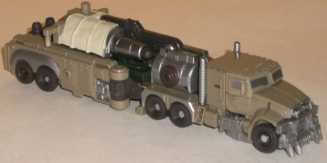
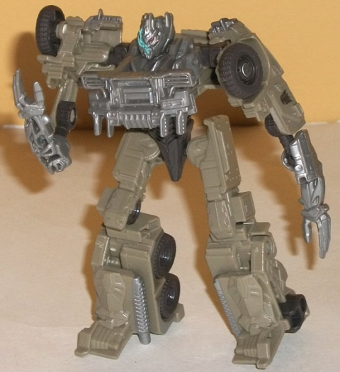
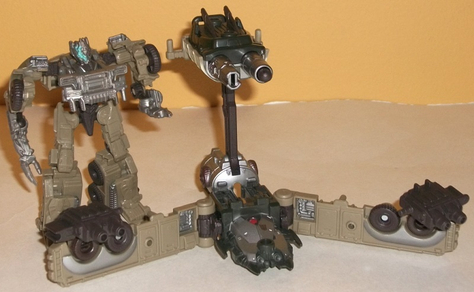
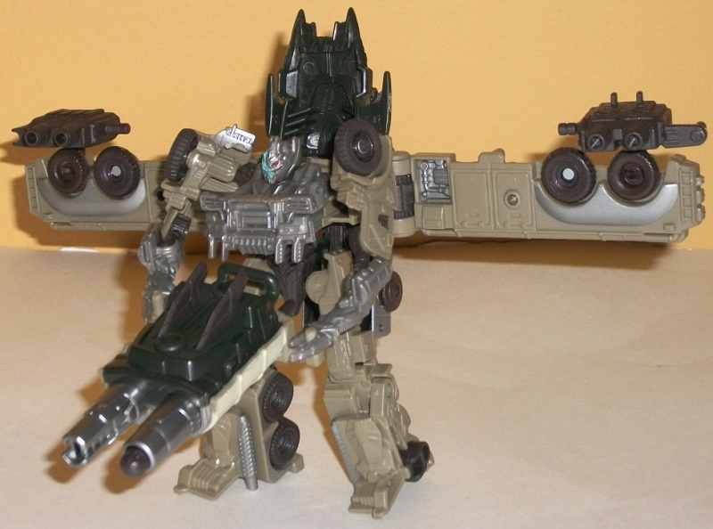

Megatron
w/ Blastwave Weapons Base
Megatron
w/ Blastwave Weapons Base
Allegiance:
Decepticon
Size
: Cyberverse Vehicle Set
Difficulty of Transformation to Robot
:
Easy
Difficulty of Transformation of Base
:
Easy
Color Scheme
: Dull dusty greenish
brown, dark gray, dark bluish gray, and some light milky gray, silver,
dull dark brown, light electric blue, dull red, and dull off-white
Figure Rating
: 7.8
Base Rating
: 8.3
(NOTE: Because this set is partially a repaint,
this is not a full-blown review. This mainly covers any changes made to
the mold and the color scheme, and merely compares it to the original DotM
Commander class Megatron. For a review on the mold itself, read the review
of the original DotM Commander class Megatron
here
.)


The core Megatron figure
in this set is a variant (not even a redeco, really) of the mass-release
version of Commander class Megatron. It's not distinguishable from the
original unless you compare the two right next to each other. When you
do so, minor changes become apparent. For one, the dull brown that makes
up most of the plastic on this version is a slightly greener shade than
on the original. For the most part (with the exception a few parts on his
front grill and smokestacks), the parts that were painted silver on the
original are merely milky gray plastic here, though it's of a particularly
light-catching shade that doesn't actually look that bad. This version's
wheels are darker than the original's, while the front grill is a bit lighter
in shade than the original's. Also, the windows are silver on this version
compared to the black of the original's, and his silver Decepticon symbol
is a bit lower on the toy than the black symbol of the original. All in
all though, these are really minor changes at best-- with the exception
of the head, which has a bunch of light electric blue "sparks" coming from
the right side of his damaged head. This is a somewhat cool effect, though
it does clash with the dull brown a bit.


Instead of coming with
handheld cannons, this version has a longer (more movie-accurate) trailer
that converts into a base (the trailer itself has no real alt mode extras,
which is a definite plus). It's more of a weapons emplacement than anything
else-- the large double-barreled cannon is the definite centerpiece of
this mode. The left barrel can fire a spring-loaded missile, though oddly
enough the right cannot. The cannon emplacement has handles on it that
allow Cyberverse-scaled figures to wield it, and the cannon emplacement
itself can move back-and-forth at two points; sorry, it can't look side-to-side.
There's also two long fragements of the truck mode that have little (non-firing)
double-barreled cannons as well, which can each move at a ball joint. The
center piece has some nice mold and paint detailing, though it obviously
is made for the combined mode and doesn't really contribute much to this
mode beyond a bit more stability.
The base mode really
doesn't change much for the combined mode-- rather, you simply rotate the
sides of the mode and clip it onto Megatron's back. (The clips hold it
all on decently enough, but they're not VERY tight-- a little bit of shaking
and the backpack will come off.) The cannon piece is detached from the
base and can be held in one of Megatron's hands. As a whole, it's basically
Megatron with a set of wings with guns on them. The center piece from the
base mode sticks up above his head in a bit of an unsightly manner, but
otherwise this mode is pretty decent, particularly given how easy the transformation
is.
From an overall standpoint, Megatron gets one of the better base extensions for the DotM Cyberverse vehicle sets. The main figure is unchanged from the original in any area that matters aside from the extra head paint app. His "base" made from his trailer is simple, and isn't going to "wow" anyone, but it does its job in both base and combined modes, with nothing standing out from it as being particlarly bad, much less horrendous. If you want an accurate Cyberverse-scaled version of DotM Megatron's truck mode, this is pretty much your only option-- but it's still pretty neat overall, and has a fair bit of play value. Recommended.
Review by Beastbot